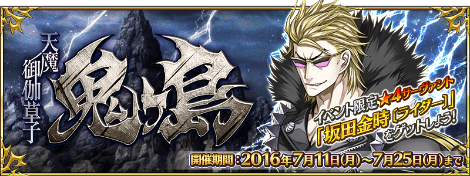
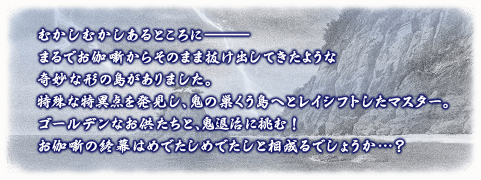
◆活動舉辦時間◆
2016年7月11日(一)18:00～7月25日(一)12:59
◆活動概要◆
舉辦期間限定活動「天魔御伽草子 鬼島」！
「★4(SR)坂田金時〔Rider〕」做為活動限定報酬Servant登場！
推進活動，入手坂田金時〔Rider〕吧！
在本活動配合主線關卡的進行，與全部的Master一起挑戰強大敵人的討伐特別關卡，發生討伐戰。
在討伐戰攻擊強大敵人的話，根據給予的傷害量能獲得「傷害點數」。
獲得更多傷害點數，拿取坂田金時〔Rider〕專用靈基再臨素材等豪華報酬吧！
◆活動參加條件◆
只有通過「特異點F 炎上汙染都市 冬木」的Master才能參加
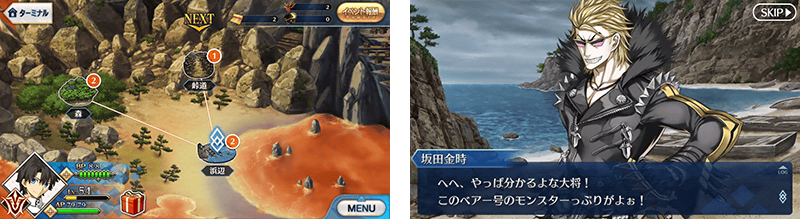
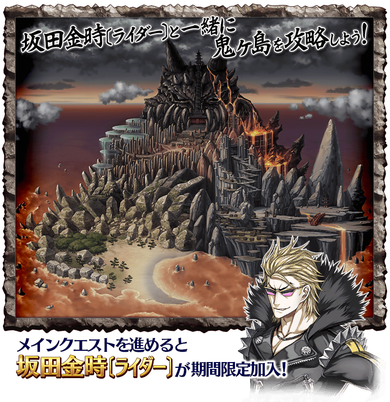
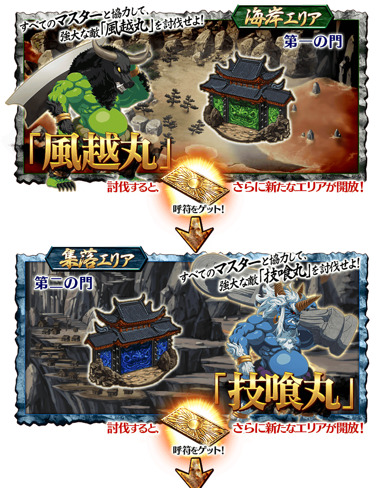
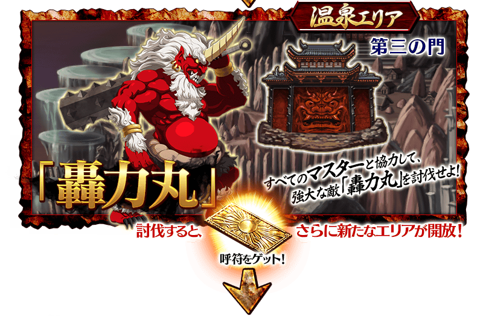
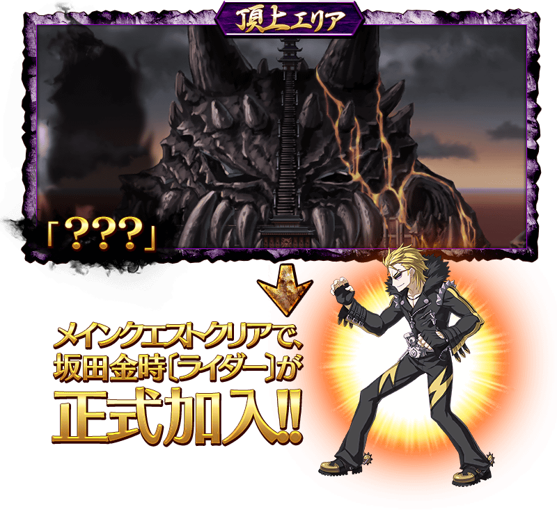
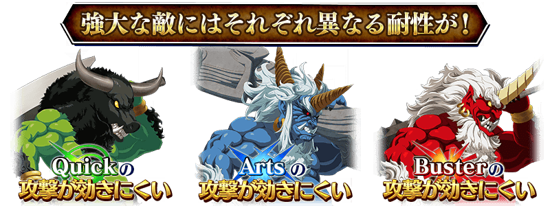

風越丸所持『Quick耐性』的效果 … Quick卡的攻擊性能衰減50％
技喰丸所持『Arts耐性』的效果 … Arts卡的攻擊性能衰減50％
轟力丸所持『Buster耐性』的效果 … Buster卡的攻擊性能衰減50％
使用『迅犬豆』時的效果 … 在討伐戰中我方全體＜含候補＞的Quick卡性能提升50％
使用『賢猿豆』時的效果 … 在討伐戰中我方全體＜含候補＞的Arts卡性能提升50％
使用『剛雉豆』時的效果 … 在討伐戰中我方全體＜含候補＞的Buster卡性能提升50％
討伐戰，是以與全部Mastetr一起討伐強大敵人做為目標。
在討伐戰中登場的強大敵人，擁有在一次的戰鬥無法擊倒的龐大HP。參加活動靠Master全員攻擊，使之討伐成功吧。
此活動，是配合主線關卡的進行發生討伐戰，討伐成功的話約10分後開放新的主線關卡。
靠Master全員擊倒強大敵人，攻略鬼島吧！
※另外，直到推進主線關卡讓坂田金時〔Rider〕正式加入以後，緊接著，發生以傷害點數報酬的獲得做為目標的討伐戰。
※依照活動參加時機的不同，有著討伐戰不會出現的情況。該情況對主線關卡的進行和報酬的獲得等沒有影響。
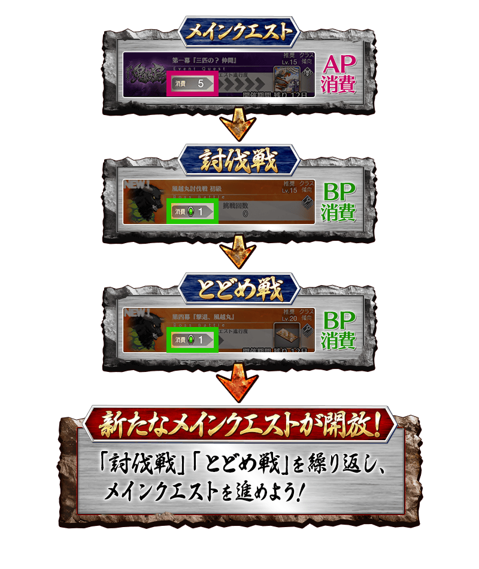
※開發中畫面。
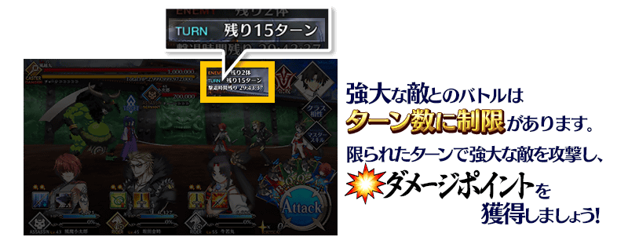
敗北時，依照給予的傷害量也能加算傷害點數。
還有，戰利品，Master經驗值，魔術禮裝經驗值，絆點數也會一部份加算。
※請注意若從戰鬥撤退則不會加算，。
討伐戰的實行是消費BP。
BP除了1小時回復1以外，也能使用靠關卡報酬等獲得的「勇気のきびだんご」「ゴールデンきびだんご」回復。
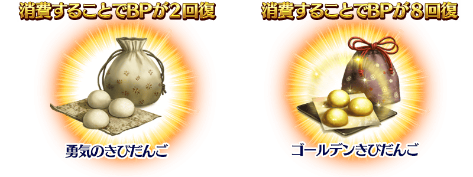
◆討伐戰進行時間表◆
「風越丸」「技喰丸」「轟力丸」強大敵人，在討伐一次以及討伐「？？？」後，會再次登場。
坂田金時〔Rider〕正式加入前，通過各「最後一戰(とどめ戦)」後，進行關卡可以馬上挑戰下個討伐戰。
？？？討伐戰後追加「繼續戰」，另外討伐戰全部設有舉辦期限。
| 舉辦期限 | 討伐成功報酬 | |
|---|---|---|
| 風越丸討伐戰 | 2016年7月11日(一)18:00 ～ | 呼符 ×1 |
| 技喰丸討伐戰 | 風越丸討伐後 ～ | 呼符 ×1 |
| 轟力丸討伐戰 | 技喰丸討伐後 ～ | 呼符 ×1 |
| ？？？討伐戰 | 轟力丸討伐後 ～ 7月16日(六)22:59 |
坂田金時〔Rider〕正式加入 + 聖晶石10個(配布至禮物箱) |
| 再來！ 風越丸討伐戰 | 7月16日(六)23:00 ～ 7月19日(二)22:59 |
呼符 ×1 |
| 再來！ 技喰丸討伐戰 | 7月19日(二)23:00 ～ 7月22日(五)22:59 |
呼符 ×1 |
| 再來！ 轟力丸討伐戰 | 7月22日(五)23:00 ～ 7月25日(一)12:59 |
呼符 ×1 |
※各討伐戰舉辦期限結束後也可以在「最後一戰(とどめ戦)」挑戰。
※7/15(五)更新時間表。
◆報酬獲得方法◆
當每次傷害點數到達一定數以上，在關卡結束時，會自動進行報酬獲得。
可以獲得的報酬名單，能從在ターミナル出現的按鈕的「活動報酬畫面」選擇「傷害點數報酬確認」做確認。
◆能用傷害點數獲得的道具◆
| 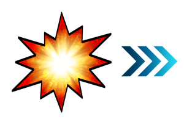 |
【活動限定概念禮裝】 【靈基再臨素材】 【技能強化素材、靈基再臨素材】 【其他道具】 |
◆超值攻略方法・其1◆
使用靠活動道具交換和關卡報酬等獲得的推進道具「迅犬豆」「賢猿豆」「剛雉豆」的話，在討伐戰，我方全體的「Quick」「Arts」「Buster」各指令卡的效果提升。
推進道具，在討伐戰關卡開始前，選擇任意1種類消費。
所謂『「Quick」攻擊沒什麼效』，強大敵人所持各自的耐性，可以使用此推進道具的抵消。
使用對應耐性的推進道具，挑戰討伐戰吧！
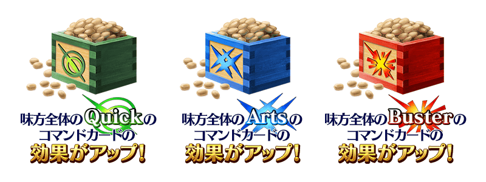
※推進道具的效果對我方全體＜含候補＞有作用，直到戰鬥結束都會持續。
◆超值攻略方法・其2◆
對象Servant在「天魔御伽草子 鬼島」的攻擊威力提升！
【對象Servant】
天草四郎、茨木童子、牛若丸、Emiya（Archer）、Emiya〔Assassin〕、沖田總司、織田信長、清姫、坂田金時（Berserker）、坂田金時（Rider）、佐佐木小次郎、酒呑童子、玉藻前、風魔小太郎、源頼光、武藏坊弁慶、兩儀式（Assassin）、兩儀式（Saber）
※各Servant的增加量不同。
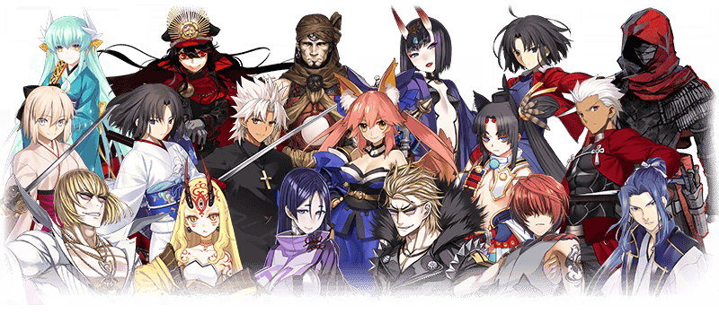
◆超值攻略方法・其3◆
裝備能以活動道具交換和傷害點數報酬入手的活動限定概念禮裝「ゴールデン相撲～岩場所～」的話，自身在「天魔御伽草子 鬼島」的攻擊威力會提升。
另外，裝備能以傷害點數報酬入手的活動限定概念禮裝「月の湯治」的話，我方全體＜含候補＞在「天魔御伽草子 鬼島」的攻擊威力會提升。
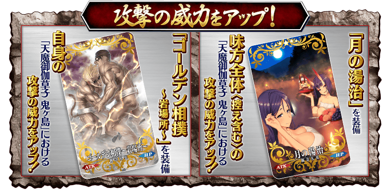
◆超值攻略方法・其4◆
裝備期間限定概念禮服裝的話，活動専用道具「鬼印のつづら」「錦の反物」「竜宮珊瑚」各自的獲得數會提升。
※請注意在各關卡的道具掉落率並非100%
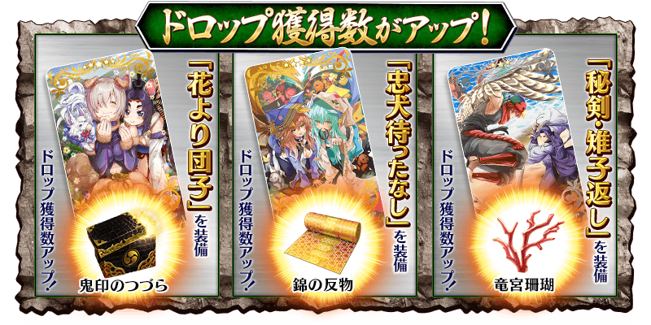
◆超值攻略方法・其5◆
在討伐戰，與強大敵人的戰鬥在BATTLE開始時，特別技能「鬥志」自動發動，賦予我方全體＜含候補＞特攻。
推薦等級更高，能得到更高的特攻加成。妥善運用特攻，挑戰高難易度的戰鬥吧！
| 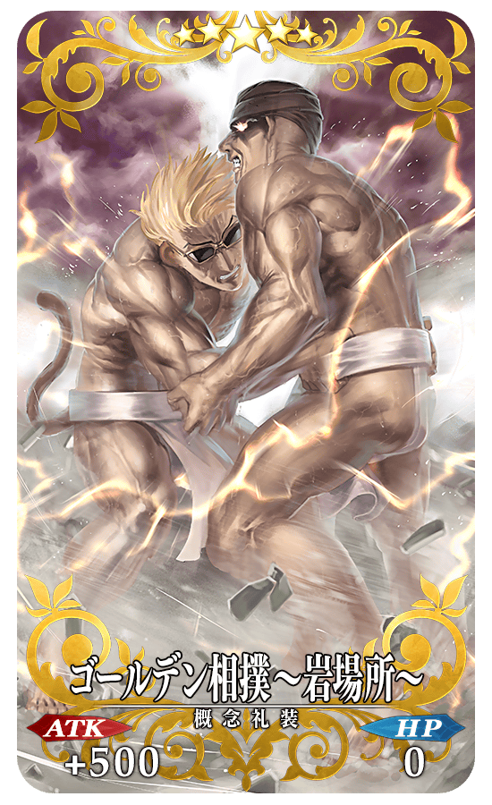 |
★★★★★SSR |
| 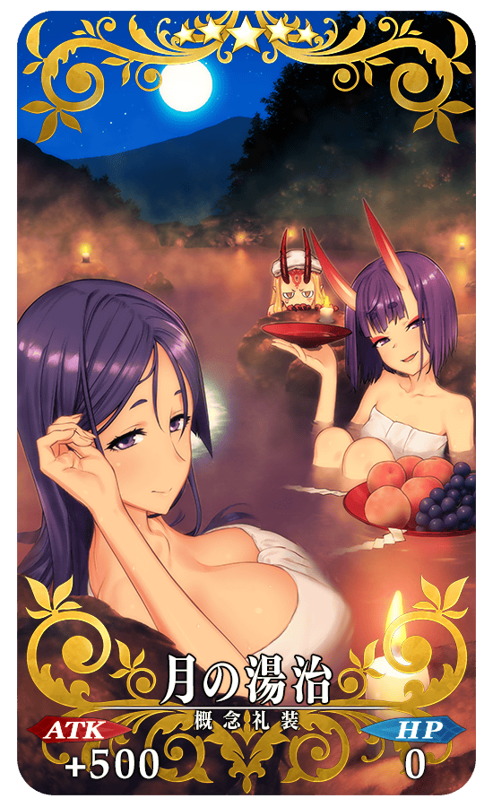 |
★★★★★SSR |
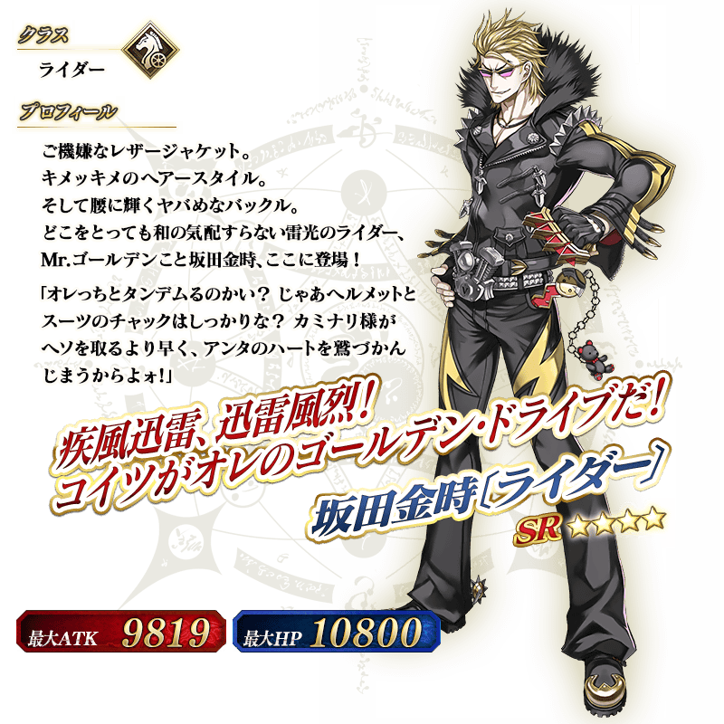
◆靈基再臨◆
使用活動期間中的靠傷害點數報酬外無法入手的「ゴールデンベアライター」，重複4次靈基再臨的話，卡面會有所變化！
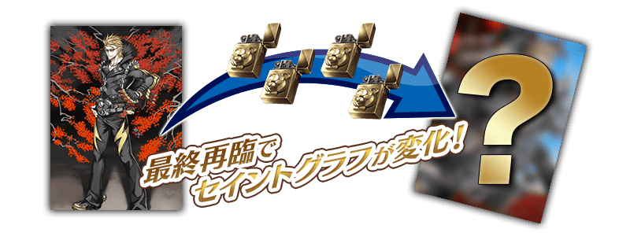
※坂田金時〔Rider〕不會隨靈基再臨使戰鬥角色的外觀變化。
◆交換方法◆
交換期間：2016年7月11日(一)18:00～7月29日(五)22:59
※交換期間結束後「鬼印のつづら」「錦の反物」「竜宮珊瑚」「勇気のきびだんご」「ゴールデンきびだんご」「迅犬豆」「賢猿豆」「剛雉豆」會消失。
從達文西工房内的「活動道具交換」，用收集來的活動專用道具來交換以下的道具。
◆能用鬼印のつづら交換的道具◆
| 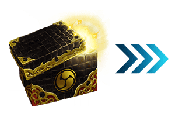 |
【活動限定Servant】 【活動限定概念禮裝】 【技能強化素材、靈基再臨素材】 【靈基再臨素材】 【其他道具】 |
◆能用錦の反物交換的道具◆
| 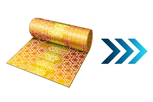 |
【活動限定Servant】 【活動限定概念禮裝】 【技能強化素材、靈基再臨素材】 【靈基再臨素材】 【其他道具】 |
◆能用竜宮珊瑚交換的道具◆
| 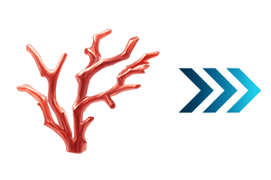 |
【活動限定Servant】 【活動限定概念禮裝】 【技能強化素材、靈基再臨素材】 【其他道具】 |
◆能用勇気のきびだんご・ゴールデンきびだんご交換的道具◆
※自7月25日(一)18:00開放
 |
【其他道具】 |
◆能用迅犬豆・賢猿豆・剛雉豆交換的道具◆
※自7月25日(一)18:00開放
| 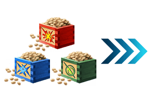 |
【其他道具】 |
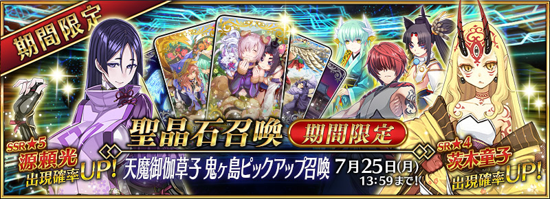
◆「天魔御伽草子 鬼島Pick Up召喚」期間◆
期間：2016年7月11日(一)18:00～7月25日(一)12:59
以期間限定舉辦「天魔御伽草子 鬼島Pick Up召喚」！
初登場的Servant「★5（SSR）源頼光」以期間限定登場！
做為Servant初登場的「★4（SR）茨木童子」、「★3（R）風魔小太郎」也是新登場！
並且，在「天魔御伽草子 鬼島」活躍的Servant「★3(R)牛若丸」「★3(R)清姫」Pick Up！
詳情請在聖晶石召喚畫面左下的召喚詳細確認。
※源頼光在Pick Up召喚期間結束後，不會追加到故事召喚。
裝備期間限定概念禮裝「★5(SSR)花より団子」「★4(SR)忠犬待ったなし」「★3(R)秘剣・雉子返し」的話，活動専用道具的掉落獲得數會提升。
在Pick Up期間中，期間限定Servant、新登場Servant、Pick Up Servant、期間限定概念禮裝的出現機率提升！
10次召喚★4(SR)以上1張確定和★3(R)以上的Servant1位確定！
※★4(SR)以上確定包含Servant和概念禮裝。
※所謂「出現機率UP」意指比同稀有度的Servant及概念禮裝出現機率更高的設定。

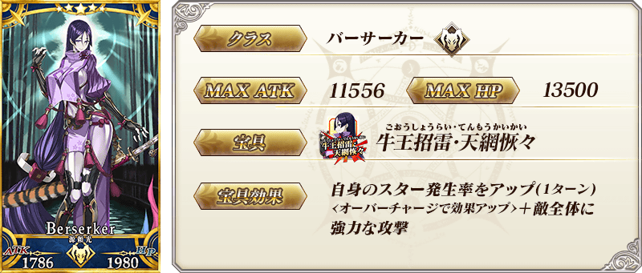
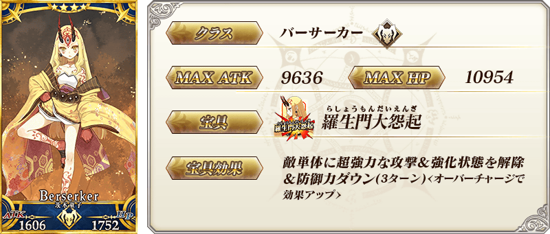
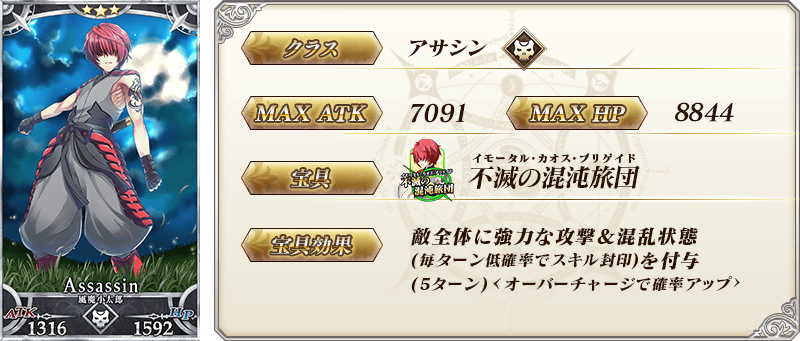

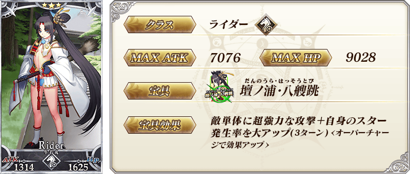
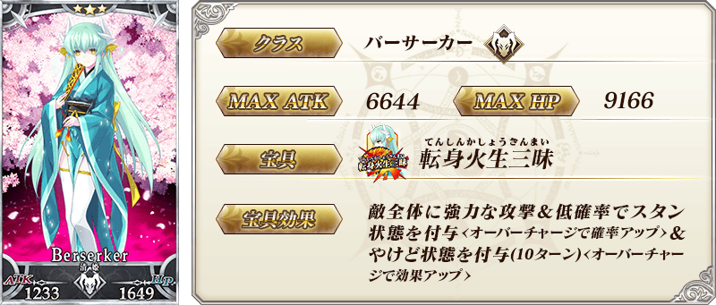
| 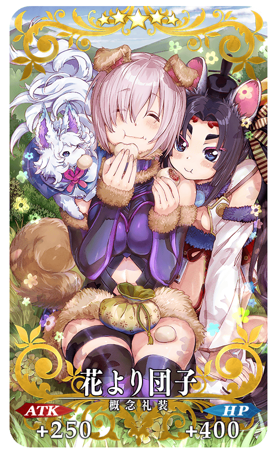 |
★★★★★SSR 花より団子 ATK 250（最大：1000） HP 400（最大：1600） 技能 自身的Quick卡性能提升15%＆寶具威力提升15% ＋ 鬼印のつづら的掉落獲得數增加1個【『天魔御伽草子 鬼島』活動期間限定】 |
| 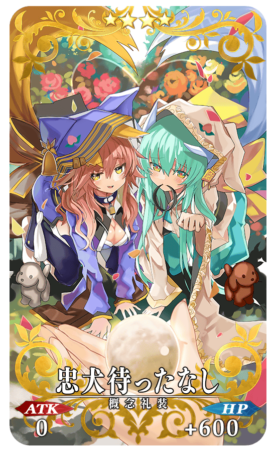 |
★★★★SR 忠犬待ったなし ATK 0 HP 600（最大：2250） 技能 自身的Arts卡性能提升8%＆NP獲得量提升15% ＋ 錦の反物的掉落獲得數增加1個【『天魔御伽草子 鬼島』活動期間限定】 |
| 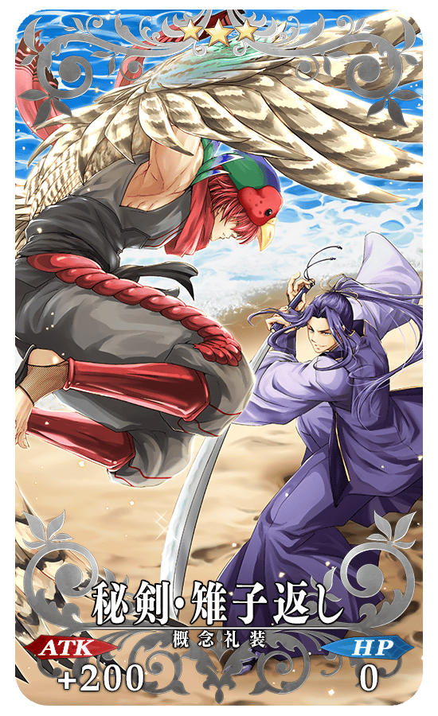 |
★★★R 秘剣・雉子返し ATK 200（最大：1000） HP 0 技能 自身的Quick卡性能提升3%＆Critical威力提升8% ＋ 竜宮珊瑚的掉落獲得數增加1個【『天魔御伽草子 鬼島』活動期間限定】 |
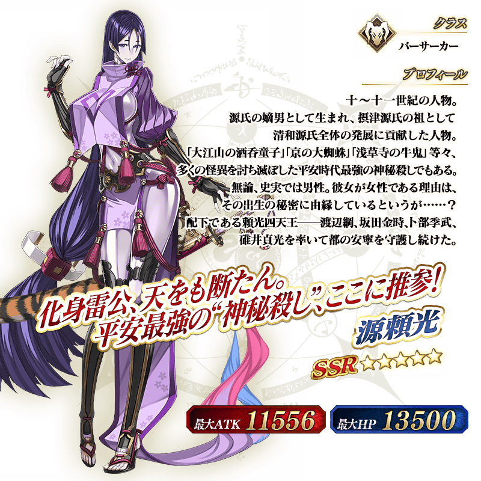
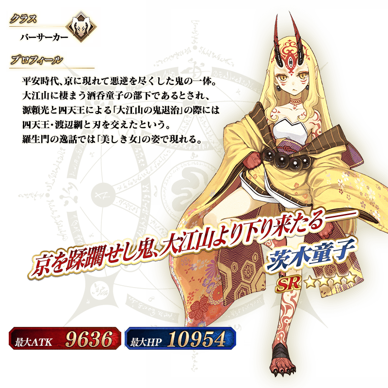